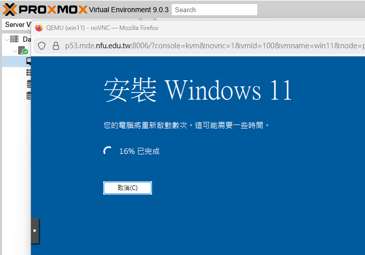

Virtualbox <<
Previous Next >> Intro_PVE
Proxmox VE
Proxmox VE
https://pve.proxmox.com/pve-docs/
https://pve.proxmox.com/pve-docs/pve-admin-guide.html
https://pve.proxmox.com/wiki/Main_Page
https://forum.proxmox.com/
https://lists.proxmox.com/pipermail/pve-user/
https://lists.proxmox.com/pipermail/pve-devel/
下載 Ubuntu server iso:
wget https://releases.ubuntu.com/24.04.3/ubuntu-24.04.3-live-server-amd64.iso
在 NFU 網段中可下載 Win11 iso (64位元 24H2 for Intel/AMD)，以及 virtio-win.iso (網路驅動程式選擇 NetKVM 目錄下的 AMD/win11 目錄)
Shift + F10 可帶出設定畫面過程的命令列視窗後，進入 virtio-win.iso 對應的磁碟後，在命令列中執行 virtio-win-guest-tools.exe。
https://qemu.weilnetz.de/w64/2025/
pve_install_win11_vm.pdf
| 选项 |
设置 |
| BIOS |
OVMF (UEFI) |
| Machine |
q35 |
| SCSI Controller |
VirtIO SCSI single |
| TPM |
Add TPM |
| TPM Storage |
local-lvm（或你自己的存储） |
| TPM Version |
2.0 |
| Secure Boot |
勾选
|
| EFI Storage |
local-lvm（必须） |
PVE install Windows 11 (2016 年的舊電腦):

Virtualbox <<
Previous Next >> Intro_PVE